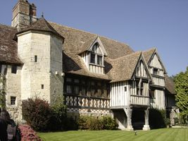
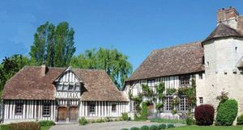
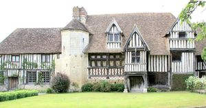
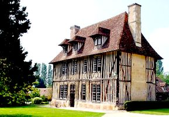
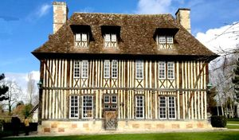
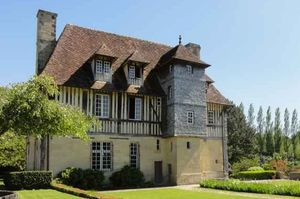

Recensement Jean-Claude Truffet
| Département | 14 — Calvados |
| Canton | Pont-l |
| Commune | Canapville |
| Type d'édifice | Château |
| Période d'origine | XV-XVI-XVII |






Trois châteaux à Canapville, Evêques, Prétot et les portes de Canapville. EVEQUES, élevé par la famille du Fossey, de père en fils restera longtemps dans cette lignée. le petit-fils pierre époux de Marie de Montpongnant mourut le même jour que son mari fut inhumée dans l'église paroissiale, leur fils Jacques prend possession des lieux en 1655. Au XVe siècle à un Benoit de Launoy qui le céda deux ans après à Jean du Fossey dont la famille devait le conserver plus de deux siècles, 1677 extention de la Branche des du Fossey de Canapville en ligne masculine, en 1749 Nicolas-François de Costard seigneur de la Chapelle, descendant de Judith du Fossey et de Nicolas de Carel, en rend aveu au duc d'Orléans. Par héritages et partages le domaine passe ensuite entre le XVIII-XXe siècle aux familles de Tesson, de Franqueville et le courtois du Manoir. Connu sous le nom de manoir des Evêques de Lisieux, et semblant dater du XVIe siècle, a été utilisé comme ferme. Racheté en 1944 par Alain Saint-Loubert-Bié et appartient maintenant à Mme de Rufz de Lavison. PORTES CANAPVILLE, l'hôtel les manoirs des Portes de Deauville vous propose une expérience unique exceptionnelle alliant le charme d'un vrai manoir du XVIe siècle où entre 1638 et 1668 Pierre Corneille passait ses vacances, associé à toutes les facilités d'un hôtel chaleureux et intimiste, ainsi qu'une salle de réunion de 45m2 pour tous vos événements professionnels.
EVEQUES, manoir du XIIIe siècle de style augeron, avec une tourelle d'escalier en Pierre, des corps de logis en pans de bois et de curieux toits. Il se compose de trois bâtiments situés à droite dans la cour: le premier en pans de bois se termine par une tourelle d'escalier octogonale bâtie en pierre; l'édifice du fond, couvert de pierre, serait la partie la plus ancienne du manoir, au-dessus de la porte, cachée par la verdure, se trouve une sculpture sur bois représentant une tête d'évêque. Éléments protégés MH : les deux logis en totalité et le bâtiment attenant à usage de pressoir, les communs, le portail ainsi que le mur de clôture : inscription par arrêté du 2 novembre 2004. PRETOT, le manoir est daté des XVIe et XVIIe siècles. À cette époque, le domaine était la propriété de la famille Ballan. La sur du dramaturge était alors mariée à un membre de cette famille, à savoir Guillaume Ballan. Le manoir présente une façade principale entièrement en colombages et qui s'appuie sur un muret fait de pierres et de briques. Cette façade se divise en six sections dans lesquelles l'orientation verticale domine. Seuls les croix de Saint-André ornant les allèges de fenêtres de l'étage et les écharpes étayant les poteaux corniers viennent casser cette verticalité. À l'arrière, la façade présente quelques différences. En effet, le mur du rez-de-chaussée est entièrement en pierres tandis que celui de l'étage est en colombages. De plus , une tour carré est accolée à cette partie du manoir. Cette tour, qui devait, à l'origine, contenir un escalier, repose sur une basse en pierre dominée par des colombages couverts d'essentes de châtaignier. Elle possède d'étroites meurtrières, avec trous à feu et se trouve surmontée par une chambre d'observation.
Evéques; famille du Fossey Pretot; famille Ballan Canapville; Famille du Fossey et du Rufs de Lavison
"
Trois châteaux à Canapville, Evêques grav -1-2-3, prétot grav-4-5 et les portes de Canapville grav 6.